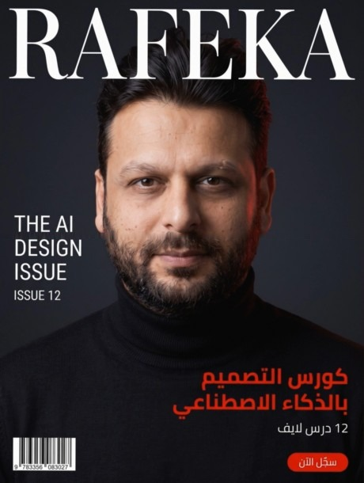
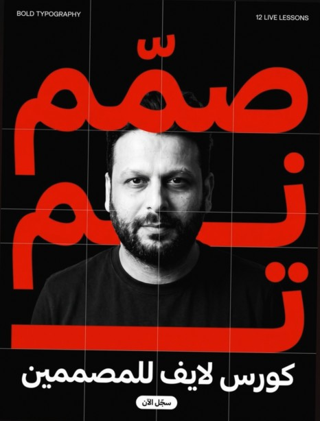
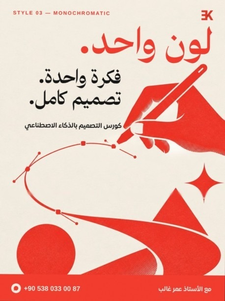
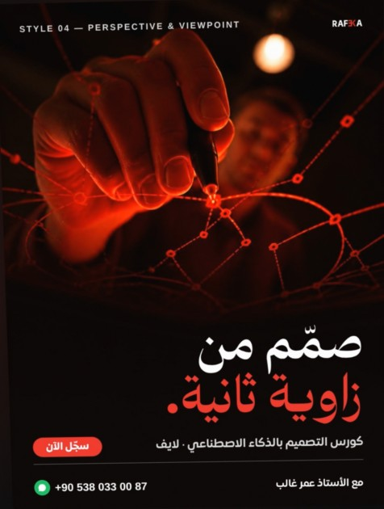
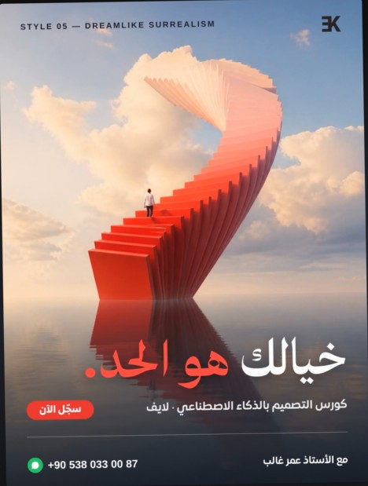
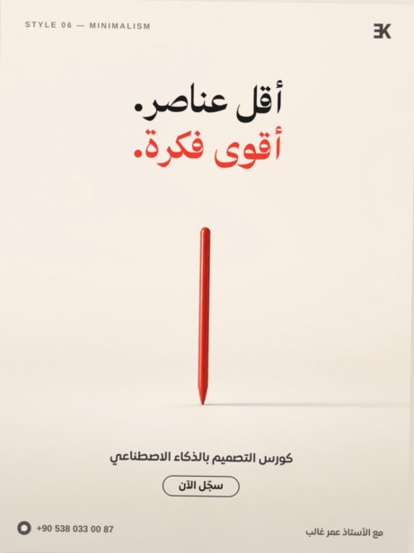

التصميم التحريريEDITORIAL DESIGN
تصميم بيشبه غلاف مجلة فخمة. صورة قوية، عنوان كبير، وترتيب واضح للمعلومات.

شو هو؟
أسلوب جاي من عالم المجلات متل Vogue وGQ. بيعتمد على صورة شخص أو منتج بإضاءة استوديو، فوقها اسم كبير بخط سيريف أنيق، وحواليها عناوين صغيرة مرتبة بتسلسل واضح.
ليش منستخدمه؟
لأن العين بتربطه فوراً بالاحتراف والفخامة. أي علامة بتطلع بهالأسلوب بتبيّن أكبر وأغلى وأوثق من حجمها الحقيقي.
إيمتى بينفع؟
- البراند الشخصي والبورتريه
- إعلان أزياء، تجميل، عطور، ساعات
- مقابلة أو قصة نجاح شخص
- غلاف كتاب، كورس، أو بودكاست
إيمتى لأ؟
- عروض الأسعار والتخفيضات السريعة
- محتوى للأطفال أو مرح وعفوي
- لما ما عندك صورة قوية، لأن الأسلوب كله قايم عالصورة
مكوّنات الأسلوب
- خط سيريف كبير للعنوان
- إضاءة رامبرانت ناعمة
- هرمية واضحة
- مساحات فاضية كريمة
- لون أكسنت واحد
- عدسة 85mm
Magazine cover style portrait, 3:4. [Subject: a confident professional man in a black turtleneck] photographed in a dark studio, soft Rembrandt lighting, sharp focus, premium editorial look like Vogue or GQ. Large elegant serif masthead at the top reading "[BRAND NAME]", small cover lines on the left, clear visual hierarchy, generous negative space, subtle [red] accent. High-end fashion magazine photography, 85mm lens.
التايبوغرافي الجريءBOLD TYPOGRAPHY
الحرف هو البطل. كلمة وحدة ضخمة بتعبّي التصميم وبتقود كل شي حواليها.

شو هو؟
تصميم بيكبّر الكلمة لدرجة إنها تصير هي الصورة. حروف عريضة وثقيلة، أحياناً مقصوصة عأطراف الإطار، والصورة بتدخل بين الحروف أو بتتداخل معها. متأثر بالتصميم السويسري وبحملات متل Spotify Wrapped.
ليش منستخدمه؟
لأنه بيوقّف السكرول. بأقل من ثانية بتوصل الرسالة حتى لو الشخص ما قرأ شي غير الكلمة الكبيرة. ممتاز لما بدك تثبّت كلمة أو شعار بذاكرة الناس.
إيمتى بينفع؟
- رسالة وحدة قوية: «خصم»، «جديد»، «صمّم»
- إطلاق منتج أو حدث
- اقتباس أو شعار للبراند
- بوست تحفيزي أو رأي جريء
إيمتى لأ؟
- لما عندك معلومات كتير لازم تنقرا
- براند هادي وناعم (سبا، زفاف)
- لما الخط ضعيف، لأن الأسلوب بيفضح أي خط عادي
مكوّنات الأسلوب
- كلمة وحدة ضخمة
- خط ثقيل جداً
- قص الحروف عالحواف
- تباين عالي
- شبكة خطوط رفيعة
- صورة أبيض وأسود بين الحروف
Bold typographic social media poster, 3:4, pure black background. One giant word "[صمّم]" in massive heavy Arabic letters filling the whole frame in [bright red #E00000], cropped at the edges. A black and white portrait of [a bearded man] placed between the letters, partly overlapping them. Thin white grid lines, small clean labels in the corners, Swiss design layout, high contrast, Spotify Wrapped energy.
ملاحظة: أدوات التوليد لسا بتغلط بالحروف العربية أحياناً. إذا طلعت الكلمة غلط، ولّد الخلفية والصورة بدون كلمة وحط الكلمة بنفسك بالفوتوشوب.
المونوكرومMONOCHROMATIC COLOR SCHEME
لون واحد بس، بكل درجاته من الفاتح للغامق. انسجام كامل بدون أي تشتيت.

شو هو؟
اختيار لون واحد وبناء التصميم كله من درجاته: فاتح للخلفية، متوسط للعناصر، غامق للظلال والتفاصيل. بيشبه الطباعة بالحرير (Screen Print) والريزوغراف، ومتأثر بأعمال Saul Bass.
ليش منستخدمه؟
لأنه بيربط التصميم بلون البراند مباشرة، فالناس بتعرف إنه إلك قبل ما تشوف اللوغو. وكمان بيخلي التصميم مرتب وهادي حتى لو فيه عناصر كتير.
إيمتى بينفع؟
- تثبيت هوية لونية للبراند
- سلسلة بوستات متناسقة عالإنستغرام
- بوسترات فنية ورسوم مسطحة
- لما بدك جو معيّن: أزرق هادي، أحمر حماس
إيمتى لأ؟
- منتجات ألوانها هي نقطة البيع (طعام، ورود)
- محتوى أطفال بيحتاج ألوان مفرحة
- لما بدك عنصر واحد يبرز بقوة عن الباقي
مكوّنات الأسلوب
- لون واحد بدرجاته
- ورق فاتح دافي
- رسم فيكتور مسطح
- حبيبات ريزوغراف
- نقاط هافتون بالظلال
- مساحة فاضية للعنوان
Flat 2D one-color screen-print poster illustration, single [red #E00000] ink on warm off-white paper, no other colors. [A stylised hand holding a digital stylus, drawing a giant bezier curve with anchor points that flows into simple shapes: a circle, a triangle, a sparkle star.] Bold Swiss-style vector art inspired by Saul Bass, subtle risograph grain, halftone dots in the shadows, lots of negative space. Top third left empty for a headline. No text.
المنظور وزاوية الرؤيةPERSPECTIVE & VIEWPOINT
نفس الموضوع، بس من زاوية ما حدا بيشوفه منها. الزاوية الغريبة بتخلّي العادي مدهش.

شو هو؟
اللعب بمكان الكاميرا: من تحت لفوق، من فوق لتحت، من ورا زجاج، بعدسة عين السمكة، أو بزاوية مايلة. الموضوع نفسه ما بيتغير، بس طريقة شوفه بتتغير كلياً.
ليش منستخدمه؟
العين متعودة تشوف الأشياء من مستوى النظر. أي زاوية غير متوقعة بتعمل مفاجأة وفضول، وبتخلي موضوع ممل (لابتوب، قلم، فنجان قهوة) يصير ملفت.
إيمتى بينفع؟
- تصوير منتجات عادية بطريقة جديدة
- إظهار القوة والضخامة (من تحت)
- شرح أدوات أو مساحة شغل (من فوق)
- محتوى تقني أو إبداعي بدك يبيّن مختلف
إيمتى لأ؟
- لما لازم المنتج يبيّن بتفاصيله الحقيقية للبيع
- صور رسمية أو هويات
- لما الزاوية بتشوّه الوجه أو بتخفي الرسالة
زوايا جرّبها
- Worm's-eye view (من تحت)
- Bird's-eye / Top-down (من فوق)
- Fisheye lens
- Dutch angle (مايلة)
- Through glass (من ورا زجاج)
- POV (من عين الشخص)
Extreme unusual camera angle: shot from directly underneath a transparent glass [drawing tablet], looking straight up through the glass. [A designer's hand presses a stylus onto the glass right above the lens; glowing red vector lines and anchor points are drawn on the glass.] Dark ceiling with one warm light behind, cinematic lighting, black and [red] palette, shallow depth of field. Bottom 30% dark and empty for a headline. No text.
السريالية الحلميةDREAMLIKE SURREALISM
مشهد مستحيل بس بيبيّن حقيقي تماماً. كأنك شايفه بحلم.

شو هو؟
أسلوب جاي من لوحات René Magritte وحملات علامات متل Jacquemus. منحط شي مألوف بمكان أو حجم مستحيل: درج طالع من البحر، باب بنص الصحرا، قلم بحجم عمارة. بس كل شي مصوّر بواقعية وإضاءة ناعمة.
ليش منستخدمه؟
لأنه بيخلّي الشخص يوقف ويفكر «شو هاد؟». بيحوّل فكرة مجردة (طموح، حرية، إبداع) لصورة بتنحفر بالذاكرة، وبيعطي البراند طابع فني وراقي.
إيمتى بينفع؟
- التعبير عن فكرة أو شعور مجرّد
- حملات إعلانية فنية أو إطلاق كبير
- براندات أزياء، عطور، فن
- أغلفة ألبومات وبوسترات أفلام
إيمتى لأ؟
- رسائل مباشرة وعملية (سعر، عنوان، موعد)
- جمهور بدو وضوح سريع بدون تفكير
- لما الفكرة نفسها مش واضحة عندك
السر
خذ أداة من عالمك (قلم، سهم ماوس، كتالوج ألوان، كاميرا) وحطها بمكان أو حجم مستحيل. وخلي الإضاءة والانعكاسات واقعية جداً، لأن الواقعية هي اللي بتخلّي المستحيل مقنع.
Surreal fine-art advertising photograph in the style of René Magritte and Jacquemus campaigns: [a gigantic red colour swatch fan opens like a spiral staircase rising from a calm mirror-like sea into a soft pastel sky full of clouds]. A tiny lone figure climbs it, seen from behind. Dreamlike, serene, hyper-realistic, golden-hour light, perfect reflections, minimal composition. Bottom third calm and clear for a headline. No text.
المينيمالMINIMALISM
عنصر واحد، ومساحة فاضية كبيرة. كل شي زيادة انشال، وضل الأهم بس.

شو هو؟
تصميم قايم على الحذف. عنصر واحد صغير بنص مساحة فاضية، خلفية ناعمة، ضل خفيف، وإضاءة هادية. متل إعلانات Apple. المساحة الفاضية هون مش فراغ، هي جزء من التصميم وبتحكي.
ليش منستخدمه؟
لأنه بيعطي إحساس بالثقة والفخامة. البراند اللي ما بيحتاج يصرخ يعني واثق من حاله. وكمان الرسالة بتوصل بوضوح تام لأنه ما في شي يشتت العين.
إيمتى بينفع؟
- منتجات فخمة وتقنية
- إطلاق منتج واحد
- براند بدك يبيّن راقي وهادي
- بوست بين بوستات مزدحمة ليكسر الإيقاع
إيمتى لأ؟
- عروض وتخفيضات فيها تفاصيل كتير
- محتوى تعليمي بيحتاج شرح
- جمهور بيحب الحماس والألوان الكتيرة
مكوّنات الأسلوب
- عنصر واحد بس
- مساحة سلبية ضخمة
- خلفية سادة ناعمة
- ضل واحد طويل
- إضاءة منتشرة هادية
- بدون كتابة ولا لوغو
Ultra minimal premium product photograph in the style of Apple minimalist ads: [a single glossy red digital stylus pen balancing upright on its tip] on a seamless warm off-white surface. One soft long shadow. Huge empty negative space, subject small and centered slightly below the middle. Soft diffused studio light, calm and luxurious. No text, no logos.
أي أسلوب بختار؟
| الأسلوب | إذا هدفك | الإحساس | أكتر مجال بينفع فيه |
|---|---|---|---|
| التحريري | تبيّن محترف وفخم | ثقة، أناقة | براند شخصي، أزياء، كورسات |
| التايبوغرافي | توقّف السكرول برسالة وحدة | قوة، جرأة | إطلاقات، شعارات، عروض |
| المونوكروم | تثبّت لون هويتك | انسجام، هدوء | سلاسل بوستات، بوسترات فنية |
| المنظور | تخلّي العادي ملفت | فضول، مفاجأة | منتجات يومية، محتوى تقني |
| السريالية | تعبّر عن فكرة مجردة | دهشة، حلم | حملات فنية، عطور، فن |
| المينيمال | رسالة واضحة وراقية | فخامة، صفاء | تقنية، منتجات فاخرة |